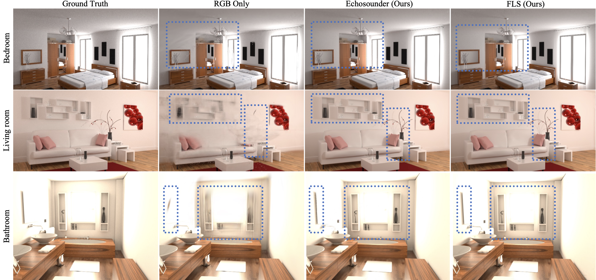
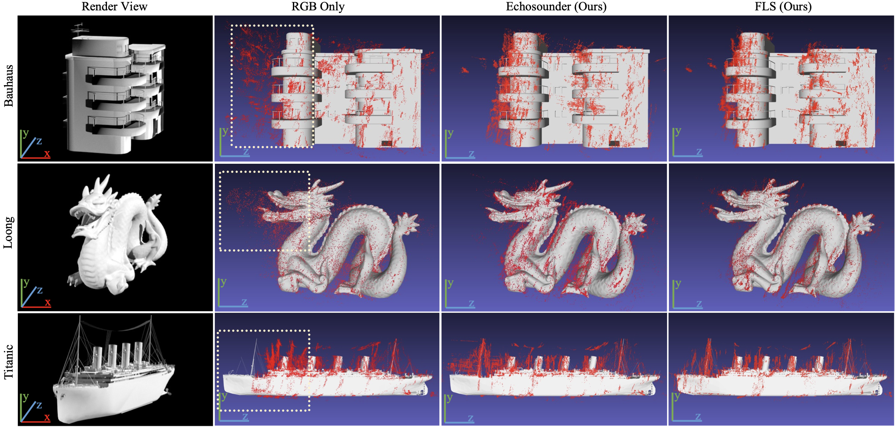
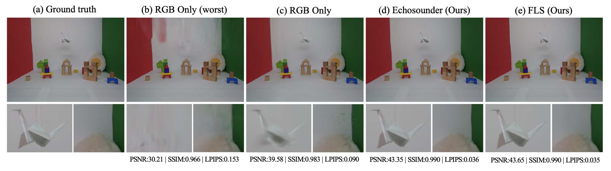

Experiment Results

Novel view synthesis comparison: The incorporation of depth information notably mitigates the presence of floaters in the reconstructed scene. Moreover, depth information accurately positions the Gaussian kernels, particularly in scenes with uniform color or overexposure.

Geometry comparison on one-object scenes We captured the data by moving the camera only along the x-axis. We show ground truth meshes and superimpose the reconstructed Gaussians as point clouds. In the highlighted regions, we can observe that camera-only methods reconstruct the geometry inaccurately along the z-axis, whereas the proposed fusion techniques reconstruct the geometry accurately.

Novel view synthesis comparison on emulated hardware We set up a Cornell box in the lab, captured both RGB and depth images, and emulated the echosounder and FLS data. In the reconstructed scene, all methods work well on the objects with high-contrast textures. However, the RGB-only technique fails to reconstruct the white object with the same color as the background and also suffers from color bleeding. Our methods, on the other hand, successfully reconstruct the white object and do not suffer from color bleeding. For different random seeds, RGB-only techniques have high variance in the reconstructed results and have poor reconstructions (b).

Qualitative comparison of echosounder real-data results. The comparison presents two scenes captured using a DSLR camera and echo-sonar with a turntable setup. Our method demonstrates a noticeable improvement in performance over the baseline RGB-only method, both quantitatively and qualitatively.